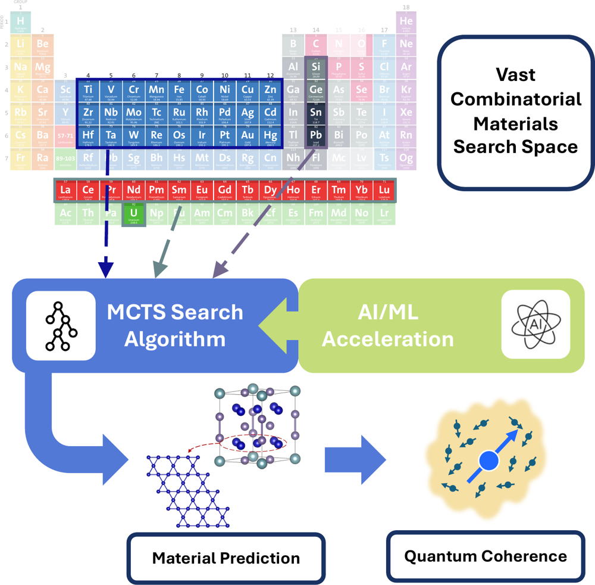

MCTS · inverse designML-accelerated Monte Carlo Tree Search
Integrating machine-learned reward and acceleration methods into MCTS for the inverse design of heavy-fermion (superconducting) quantum materials. Developed with Los Alamos National Laboratory.
Read more →